La Guyane est un vaste territoire, ce qui rend sa découverte longue et difficile.
Grâce à notre sélection, découvrez les meilleurs lieux de ce pays pour organiser votre séjour!


 

Situé au sud-est de Cayenne, vous pourrez y rencontrer de nombreuses espèces d’oiseaux, de mammifères, d'amphibiens et de plantes rares, en voie de disparition. Les marécages sont traversables à l’aide de pirogues et vous permettront d’explorer de nombreux paysages uniques au monde pour un séjour inoubliable.
De par son emplacement géographique avantageux, la Guyane constitue un site de lancement spatial optimal.
Depuis ce centre, les fusées lancées sont destinés à la télécommunication. Vous pourrez y découvrir les impressionnantes infrastructures de la station. Les commentaires de nos guides expérimentés aideront les plus néophytes d’entre vous. Cette visite ravira les plus curieux d’entre vous !
Situé à Macouria dans une zone marécageuse et de savane, cet endroit est propice à la faune présente dans ce zoo.
Ce parc de 75 hectares protège de nombreuses espèces rares et protégées. Plus de 450 individus issus des espèces locales sont observables dans un milieu adéquat. Cette réserve naturelle permet aux visiteurs d’explorer la faune guyanaise pour un prix abordable. A noter que le billet d’entrée est valable 1 an. Le parcours balisé à travers les arbres vous assure une balade de 2 heures complète et inoubliable à travers une forêt magnifique.